Quotes, Rants, Wisdom, Philosophy, Art Readings, Etc.
Contents
- 2024-01-01 - MIT
- 2023-10-08 - RISD
- 2022-12-28 - Connectors
- 2022-05-14 - Carnegie Museum of Art
- 2022-04-17 - Canon
- 2021-05-24 - Nuclear Aesthetics
- 2021-05-23 - Dramatic Imagination
- 2020-08-17 - Walking
- 2020-05-15 - Art, Craft, Science
- 2020-05-15 - Earlier Art Readings
- 2020-05-15 - Interspecies Ecologies
- 2020-03-25 - Thesis Vector
2024-01-01 - MIT Institutional Knowledge and Fun Historical Facts
Environment, Health, and Safety
1949 - MIT hires a safety officer (Main history source - this article also mentions mustard gas, jet fuel incidents)1965 - Cambridge Electron Accelerator Fire led to on-call program and safety procedures for minors (fun aside on the CEA is this quote from MIT Physics donor Virgil Elings's thesis: "[Prof. Louis Osbourne's technical assistant, William] Lobar's unselfish assistance in rescuing the data during the explosion at the Cambridge Electron Accelerator is deeply appreciated")
1972 - A physics grad student, Shri Krishna Singh, is electrocuted leading to MIT's first OSHA inspection.
OSHA inspections of 30 buildings discover "unchained gas cylinders, step ladders with broken, steps, vacuum pumps and other mechanical equipment with unprotected belts and pulleys, bicycles chained in stairways, improper temporary wiring, exposed high-voltage wiring or components, and generally cluttered halls" (source).
MIT asks DLCs to appoint safety coordinators. (source) who eventually conduct annual inspections
1975 - Due to the Clean Water Act, MIT's hazardous waste contractor loses its ocean-dumping permit leading MIT to struggle to locate a contractor to incinerate or bury diverse small-quantity wastes. (source), (source)
1986 - MIT must submit a chemical inventory annually to the Local Emergency Planning Committee as a result of the Superfund Amendments and Reauthorization Act of 1986 Title III: Emergency Planning and Community Right-to-Know Act
1987 - OSHA Hazard Communication Program is extended from manufacturing to all industries; a Hazard Communication Plan and training on reading a MSDS is required. [29 CFR 1910.1200 "Hazard Communication."]'
1990 - Each DLC must have a Chemical Hygeine Plan annually renewed by the Chemical Hygiene Officer [29 CFR 1910.1450 "Occupational exposure to hazardous chemicals in laboratories."]
1998 - EPA inspection occurs; Findings include 18 violations of Clean Air Act and the Clean Water Act.
It is found that MIT "Violated federal hazardous waste emergency, storage, handling and labeling regulations. Violations were found in 56 of 114 laboratories inspected...Failed to keep an opacity monitor on its medical waste incinerator in working order and violated several reporting requirements relating to the use of fuels in MIT's power plant...Did not have an adequate and fully implemented oil spill prevention plan."
This is considered "middle of the pack" for research universities. (source) (source)
2001 - MIT signs a consent decree containing Supplemental Environmental Projects: (source)
- creating the Environment, Health, and Safety Management System
- Environmental Virtual Campus website summarizing regulations for campuses
- outreach via Program for Environmental Education and Research (PEER)
- the "biofiltration storm water management system" next to Stata
- expanding recycling (10.5% to 20.3% in 2000)
- creating green construction guidelines
- supporting the Clean Charles 2005 Initiative
- commiting to water conservation
2013 - In response to a hoax incident, MIT requires DLCs to have Emergency Preparedness Plans (command succession, communication, shelter-in-place locations) & Emergency Preparedness Coordinators
Business Systems
pre-1989 - Staff Appointments and DIstribution report (SANDI) systemcirca 1978 - I have a floppy disk that reads "MIT Custom Kit for IBM Mainframe Dial-Up WhiteKnight v11.12 HyperCard Stack | O&S Client Services Help Desk 3-7230"
1989 - 1995 - Controller's Accounting Office (CAO) directory on IBM ES/9121 Model 480 Enterprise Server MITVMA/C mainframe in W91 (data since 1978); Access charges; VM-51, "A Guide to Help for MIT-Supplied Extensions to VM/SP Operating Systems."
circa 1995 - use OpenText HostExplorer for Kerberos authenticated IBM 3270 mode (full-screen) telnet session to MITVMA
1993 - 1999 - $SumMIT; (source), (source)
1999 - 2002 - SAPGUI with kerberos
2002 - 2013 - SAPweb
2013 - present - ATLAS brand (still SAP)
2020 - present - ATLAS is the brand for CovidApps (CovidPass, CovidVaccine, CovidAccess) and eventually TimTickets and NFC IDs to the point physical IDs are optional.
Learning Management Systems
2001 - Stellar, uses Sakai 22008 - 2009 - Plans to create Stellar 2.x/StellarNG; evaluated Moodle, MoodleRooms, Drupal, Sakai 2.x/3, BlackBoard, Angel; looking to make changes: sort-able content, groups within sections, batch import/export, calendar export, forum notifications, permissions, release dates, progress tracking, course previews, export materials not being a confusing zip file
2009 - MIT Council on Educational Technology and Faculty Committee on Learning Management Systems recommend Blackboard
2011 - IS&T tested Blackboard for 14 courses; "90% of course administrators and 68% of students preferred Stellar over Blackboard"; expect to release Modular Service Framework modules in 2013 (source)
2013 - Some "Learning Modules" are released/in development
2018 - Some classes still using Stellar; others using Learning Modules; a student develops a browser extension, lmodplus, to speed it up
2020 - MIT purchases a license to Canvas
The internals of MITx Online / Open edX:
The server looks at a json configuration file pointing to courses along with start/end date info. The server finds the `course`s which are xml files in a `course` folder and a json file in the `policy` folder which defines assignment categories and their weights.
The `course` contains `chapter`s which contain `html`s and `sequential`s which contain `html`s and `vertical`s which contain `html`s and `problem`s which contain `html`s and `Response`s/`Solution`s which both contain `html`s. At any point these can be written directly in the xml file or included with a url attribute which is resolved in the chapter, sequential, vertical, problem, or html folders. Historically, one could use subfolders and colons in the url attribute but that practice has been deprecated in favor of very long filenames...
A `sequential` has an assigned grading category. A `problem` has an assigned number of points, attempts, and relative weights. The `Response`s have assigned points and can be of many types including `FormulaResponse`, `NumericalResponse`, and `CustomResponse`.
`FormulaResponse`s grade by substituting values for each allowed variable in both the expected and students' responses. The range of values to check and number of samples are configurable. This leads to some edge cases if say a variable is always sampled as 2 or the expected answer is indistinguishable from zero or an expression becomes undefined unless simplified. `NumericalResponse`s allow a tolerance, partial credit, and a range. `CustomResponse`s allow you to assign points from a javascript or python script.
In principle, the entire course can be a single xml file or a policy.json file that overrides every attribute.
A common setup for edX is to pull code from a live branch of a git repository to publish to students and also pull from a staging branch to a separate staging site for testing. By using the git integration, changes made in the edX Studio interface will be overridden. Before pushing code, one should check for errors using edx-cleaner from the olxcleaner package. Fun fact: if you set an assignment date to one which does not exist like February 29th, the server's parser will error out and the rest of your course will fail to import. This will not be logged.
Alternatively, one could use the edX Studio interface which will generate xml files with garbled names which are hard to reuse between courses without copy/pasting from the inconsistent Studio interface with different views for 'html's and 'problem's or the "staff debug info" button which will dump the raw xml.
Other technology upgrades:
1999 - 2006, Microsoft committed $25,000,000 to fund technology-based education projects at MIT through the iCampus initiative: Technology Enabled Active Learning (TEAL), the iCampus / MIT Online Assessment Tool (iMoat) used for the Freshman/First-year Essay Evaluation over a decade later, XTutor (a precursor to catsoop and MITx answer checkers) and the School-wide Modular Program on Fluid Mechanics. Related projects are in this galley.2011 - transcripts digitized from microfiche
2011 - digitize admissions
2012 - registration digitized instead of on paper
2012 - online grade submission
2014 - digital add/drop form
2015 - Duo two-factor authentication
Note: If you have difficulty getting an MIT Certificate on your phone (tired of typing your password and Duo forgetting you), try https://certassist.mit.edu/.
circa 2013 - Registrar generates schedules using open-source timetabling system called UniTime; Problem definition, The algorithm, Source on the version MIT uses
Student-made course selection tools:
2007 - CoursePicker (picker.mit.edu) classes searchable by level/course/requirements/units/day/time with export2012 - CourseRoad (courseroad.mit.edu/old/) for planning out your student career by dragging/dropping classes with visual indication of prerequisites, requirements, and offerings; also saving and sharing possible schedules
2013 - whichclass (unsure if ever public/archived) an app that appears to have connected courses by content into a graph with filter options
2014 - OfCourse (ofcourse.mit.edu) allows users to upload their degree audit page and rank classes to give crowdsourced (currently from 754 students' schedules) recommendations for typical and next classes to take
2016 - firehose.guide (firehose.guide) presenting course evaluations sorted by rating, hours, students, requirements
2017 - firehose.guide (firehose.guide) with schedule planning
2017 - FireRoad iOS/android app for course selection; designed to be firehose+courseroad
2018 - Courseroad 2 (courseroad.mit.edu) redesign; reuses FireRoad database
2022 - hydrant (hydrant.mit.edu) a SIPB-managed continuation of firehose.guide
Research Funding:
- MIT is assigned to the Office of Naval Research as its Cognizant Agency (as more funds were from the DOD than HHS in the previous years). is the , the indirect cost rates (those which cannot be attributed to a specific research project i.e. 50-75% Facilities and Administration and 10% education)
- Internal audits every 3-4 years (arose in the 80s from fear of fines that scale - the funding agency will audit some fraction then extrapolate to a lump sum - "Stanford had the yacht", Harvard house renovation, faculty at Duke: "you can't suspend my procurement card - I'll lose my gym membership")
- Physics handles ~40 non-government grants and ~230 grad student appointments
Mailing Lists:
- Mailing lists can be managed here: https://groups.mit.edu/webmoira/ ; be sure to use Moira lists rather than mailman unless you really need anonymity/moderation.
- To unsubscribe from a mailman list, simply visit "https://mailman.mit.edu:444/mailman/options/some-mailman-list-you-are-on/your-kerberos@mit.edu"
- It is possible to send as a mailing list (or as anything@mit.edu but you'll only get replies if the mailing list forwards to you) via this method. Note this still leaves your athena login in the email headers.
- More advanced functions can be done via blanche
Miscellany:
- Once committed to MIT, you receive an Infinite Connection ID to make an account at https://alum.mit.edu/ . Until around 2020, the home address on your application was publicly available on the alumni directory even if you had yet to create an account.
- Some fun rooms:
- 6-017, Radiation Protection Program Central Isotope Storage, home of gammacell irradiator
- 24-038 Main Accumulation Area which has the 4 4 4 NFPA diamond on the exterior door
- 16-039 temperature and humidity controlled flammable or biological radioactive waste storage room with that I once saw the inside of when facilities was checking for basement flooding.
- 10-086 which is a room only accessible through a "telephone room" and whose purpose is VAULT and whose owner is Vice President for Finance. Apparently, the lounge above which also has a VAULT used to be the office where you collected your paycheck
- when 26-100 was last renovated, the handrails they bought were an inch too long to line up with the 4 bolt holes in the floor under each leg so they tossed the pallet of 36 railings in the back and bought new ones
- For long-range planning, MIT is currently following the 2030 Framework which includes the Accelerated Capital Renewal initiative (ACR) priorities and the East campus/Kendall gateway urban design study with planning from 2009-2014 through construction into the 2020s. Funding for current construction is included in the Resource Development Campaign for a Better World
- This is distinct from the previous captial construction program sparked by the 1998 Report of the Presidential Task Force on Student Life and Learning.
- Apparently MIT's first actual research sounding rocket was launched by Hale "the only person who wrote any documentation about what he did" Bradt and it had all the classic experiences: finding food near Las Cruces, trying to get a radioactive source approved, rain in the desert, jokes about leaving on the lens cap, a dozen people furiously working the day of the launch, having your weight wrong and needing to mount something differently at the launch site, getting something shipped from MIT last minute and it not arriving, etc. (source)
2023-10-08 - Rhode Island School of Design Museum
I took the commuter rail to Providence to visit the museum. It has a substantial quantity of recently acquired contemporary pieces. The museum is a number of combined properties with multiple stairwells which is hard to navigate. Here are the objects I found most interesting:
Duane Slick - An Actuarial Space II, 2022
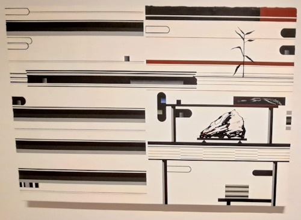Persian Samovar, 1800s
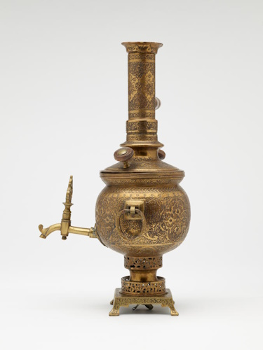Johann Joachim Kändler - Harlequin with Goat As Bagpipes, 1736 - 1740
Greek Vessel Attachment in the Form of a Sea Bull, 4th century BCE-3rd century BCE

Sol LeWitt - The Area of Manhattan Between the Places Where Sol LeWitt Has Lived! 115 E 34th St., 185 Ave.C, 42 Montogomery St., and 117 Hester St., 1977 - 1978
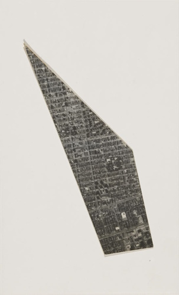Arthur Hash - Happiness is Regulated by Your Success Bracelet, 2019
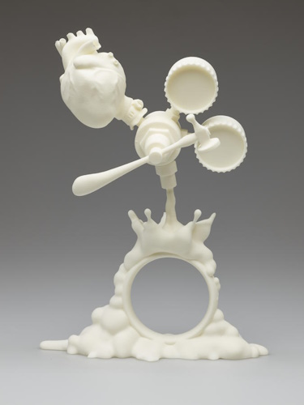Alfonso Ossorio - Dividing Cells, 1951
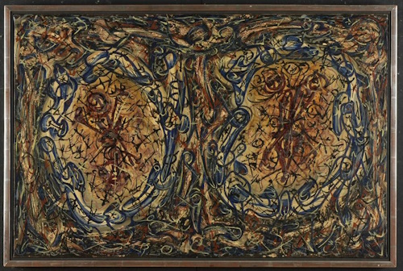Hubert Robert - Architectural Fantasy, ca. 1802-1808
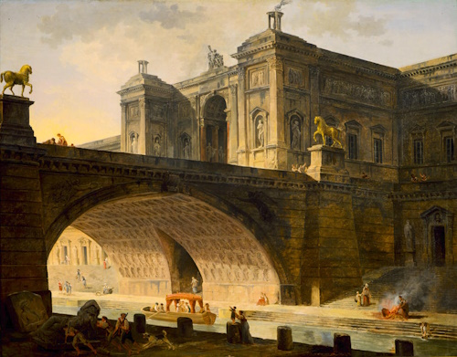2022-12-28 - Connectors
Due to my semi-experimental position within a physics department, I have access to a wide range of discarded/extraneous connectors which I have begun to collect. For now, I have crimped/soldered all my coaxial connectors to 50 ohm RG58 A/U, 75 ohm RG-59/U, or premium 50 ohm RG-316 (from broken ThorLabs patch cables because RG-174 was unavailable).
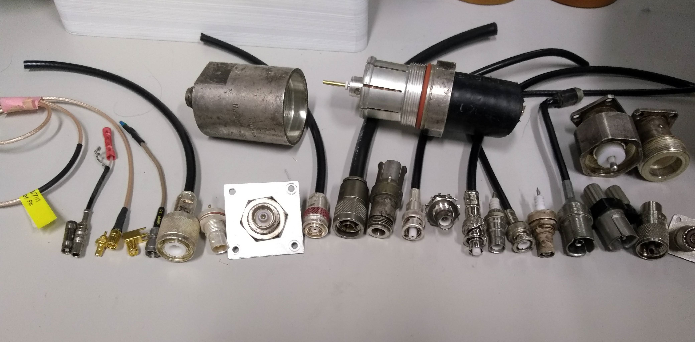- LEMO/K-Loc: Kings 1075-1, Kings 1079-5
- SMB: ?, ?
- SMA: ?, ?
- HN: Amphenol 82-816, none
- Triax: Amphenol 31-4679-1, none
- C: Amphenol UG-634/U, none
- Kings KA-59-82 crossover between TNC and MHV
- N: GenRad 874-QNJ adapter, Pomona 4980
- MHV: Kings KV-79-14; Kings KV-59-16
- SHV: Kings 1704-1, Kings 1705-1
- BNC: TRU 308, Amphenol M23329/3-01-03
- GR874: GenRad 874-Q2 binding post adapter, test cable from klystron
- UHF SO-239: Amphenol ?, Amphenol PL259 (incomplete)
- Heliax Andrew L46PN terminator
- LC: ?, ?
2022-05-14 - Carnegie Museum of Art
I recently chaperoned my high school art club's trip to the museum which has all new exhibits since the last time I visited. Here are some thoughts:
Working Thought
The first piece I see is the one I was looking for by MIT graduate Tomashi Jackson who combines vibrant colors on top of photographs using relevant materials to highlight lived experiences.
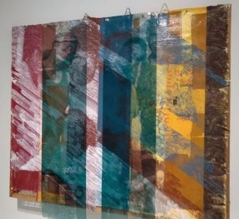
The first thing I notice in this depiction of the Johnstown Flood by Aaron Spangler is the use of pipes as an element in the overall Metropolis aesthetic. Perhaps unintentionally it showcases the irony of a city's destruction being caused by neglect of drainage infrastructure by a club comprised of railroad and steel elites who made their money selling infrastructure.
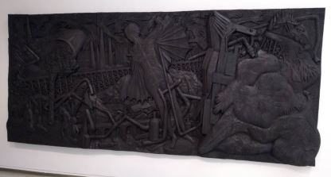
But otherwise, it's a fragile piece of infrastructure requiring small adjustments and maintenance - which helps explain why other works in the exhibit (Joe Minter) use wrenches as a primary element as opposed to other classes of found tools.
In the theme of maintenance, there's a film by Mierle Laderman Ukeles who I had who is known for highlighting the maternal duties of "maintenance" as opposed to the masculine task of "creation". It documented the June 21, 1992 performance of a ballet of barges with recyclables and towboats in Pittsburgh. One viewing platform barge was given a recycled glass diamond; another barge had a ziggurat of steel and aluminum; and the final barge had steel scraps. The two barges crossed between rivers then were "flopped". The towboats moved in choreographed circles in the Forks of the Ohio. Meanwhile, retired steelworkers performed choreographed movements in the Point State Park.
Towering up a wall are Moyra Davey's collection of decaying pennies photographed and individually mailed/put into circulation with a constellation of bright stickers. This series was sent to Carnegie because 1943 pennies were manufactured out of steel.
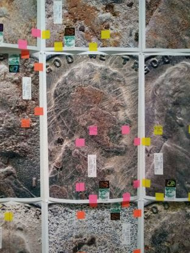
Locally Sourced
This collection of local craft creations includes a set of bowties by Knotzland based on museum collections and historic homes so of course I needed to take a picture.
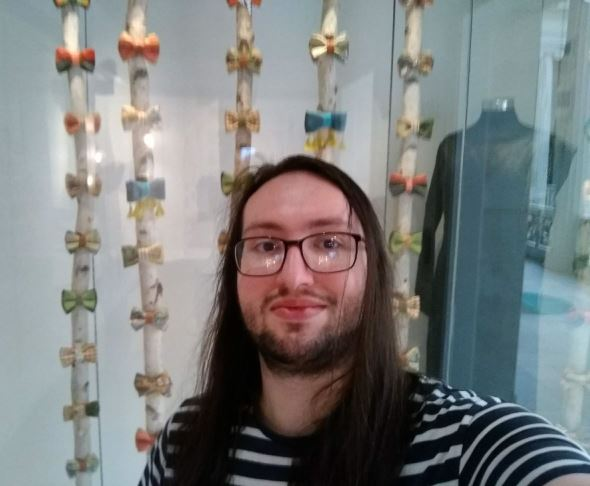
Zoe Zenghelis: Fields, Fragments, Fictions
After looking around for a while, I talk to a volunteer, a former math major and daughter of a physicist, about the exhibit. Based on talking and later reading the 38-page program, I note that Zoe Zenghelis' practice is dreamlike abstract colorful architecture informed by emotion rather than the traditional black and white pragmatic practice.
I love the vibrant minimal forms in her architectural paintings emphasizing the placement of important planes with its almost-computer-generated aesthetic (SimCity or Rollercoaster Tycoon). In particular, I enjoy the simplification to the essence of a landscape design in Cassata after Parc de la Villette.
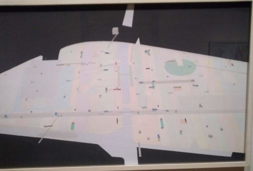
A Pittsburgh Anthology
One is supposed to purchase a $15 binder from the gift shop then collect cards about local artworks from around each room. In addition, there are cards where one may write and leave behind or take stories of visits to Pittsburgh from other visitors. Some highlights include "We are exploring the museum and trying to be artsy." and "Where is the bathroom?".
One piece I enjoy is this proposal, Piers Project: Pittsburgh: Steel Object, for a sculpture mimicking the design of coal processing structures to be a centerpiece of reclaimed public space.
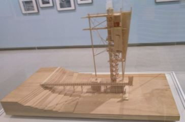
Extraordinary Ordinary Things
This collection of home furnishings is focused around a collection of chairs. One that catches my interest in particular is this piece by Frank Gehry, architect of the MIT Stata Center.
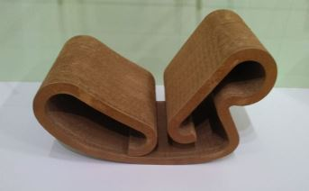
The exhibit also has tables with books such as The Lucky, Plucky Chairs, a short story about Thonet No.14 chairs written by the chairman of a chair company followed by a guide to popular chair designs.
Because of my Big Mouth Billy Bass ugly Christmas sweater, I am drawn to Achille Barbizet's Monumental basin, a kitschy piece of Rusticware.
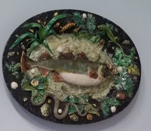
Another area highlights women in the Bauhaus movement including this serving platted by pioneering industrial designer Belle Kogan.
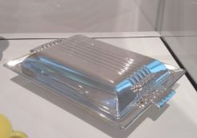
I also enjoy the simplicity of Jurgen Bey's Gardening Bench, a minimal blackbox device that extrudes a loaf of furniture.
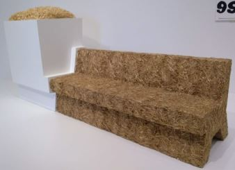
Crossroads: Carnegie Museum of Art’s Collection, 1945 to Now
An entire room contains only a set of artist Park McArthur's used CPAP filters and walls with printouts of mirrored spirometer gradations so it looks as though one is being measured. I appreciate the incorporation of the aesthetics of measurement along with the emphasized dynamic architecture of air.
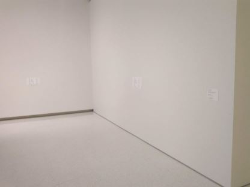
I am intrigued by Rachel Harrison's Utopia. On one side there's an explorer admiring a landscape and on the other there's a piece of fool's gold. The latter makes me think back to the book River of Shadows: Eadweard Muybridge and the Technological Wild West and the co-production of communication technology and artificiality.
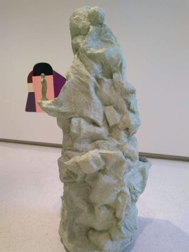
I sit for a while at the Martha Rosler film A Budding Gourmet but the volume is a little too low to pay full attention. It appears to be images of cookbooks (actually food magazines) with sarcastic monotonous storytelling of the constructed commodity that is a cuisine.
Finally, I reach a piece documenting long walks like my own. Land artist Richard Long's Elterwater Stone Ring is a collection of 113 stones each representing a walk through the town of Elterwater. I enjoy the conceptual archival objects documenting large quantities of labor as opposed to land art's left-behind marks of having walked.

2022-04-17 The Canonization Manifesto: A Hypothetical Architecture Thesis
Canonization is any of a number of emergent phenomena whereby an abundance of knowledge is filtered into canonical narratives especially those encountered in a field of knowledge production. Wishing to emphasize the plural and coexisting nature of canons, note that, at every scale, individuals appear to filter and fit each piece of knowledge they come across into a personal narrative or head-canon. Due to this constant reinterpretation, describing the behavior of emergent unified narratives at a macroscopic level has led to many terms scattered across the fields of knowledge production. Thus I seek to perform some mathematics - once described as "the art of giving the same name to different things".
Rather than proposing a theoretical framework around canonization, my practice aims simply to aggregate perspectives that may be useful for studying their general role in the trans-disciplinary field of knowledge production consisting of art, science, design, engineering, craft, and surely others - as described by artists, philosophers, art historians, science historians, art critics, ethnographers, media ethnographers, anthropologists, sociologists, urban planners, psychologists, science technology and society scholars, practitioners in these fields, pedagogy researchers, outsiders, public perceptions, etc.
Some canonical narratives are intimately shaped by epistemologies - systems of verification, belief, and trust. These systems define the extent to which one outsources belief to others' narratives. These are particularly significant for looking at modernity since the Enlightenment as technology has consisted of more and more layers of abstract thinking. These are based on models one may call molecular or nuclear whose unraveling far exceed an individual's comprehension. In that sense, these are ways of grappling with the need to develop canonical narratives to live with an increasingly cyborgian existence.
Other canonical narratives rely on ontologies - systems of definition and understanding. These systems attempt to address questions of scale and scope - what constitutes the physical extent of an object and how far into an infinite regression of abstract or virtual properties and relationships one ought to consider. Related are critical frameworks which are canonical narratives one temporarily adopts to force oneself to analyze a particular perspective of a system or work of knowledge production. Others are considering the value of coexisting ontologies such as using indigenous or archaeologically rediscovered understandings which emphasize non-human species in order to consider conscious or sustainable design.
Practitioners of a field of knowledge production tend to utilize field-specific canonical narratives. Due to an abundance of tacit knowledge necessary to operate in an efficient manner, it seems reasonable to have a list of memorized surface-level maxims, axioms, posits, aphorisms, particularly useful results, and a common lexicon to begin the learning process. Hierarchical models of learning tend to call this learning the rules before one breaks them in a risky act of post-canonical synthesis. This is partially related to the necessity to identify with and be accepted within a field to avoid a state of schizophrenia. The inertia perpetuating choices of broad macroscopic ideas have been called paradigms consisting of a shared system of analogies one uses to understand their own work or epistemes emphasizing the power structures that reinforce them.
Outside of personal interpretations, some macroscopic changes in canonical narratives constitute deterritorialization where a nonlinear narrative has its context removed and is stated as a basic axiom, obscuring its construction, or compressed to a face of a concept. One particular example is the construction of an aesthetic i.e. naming a canonical set of visual cultural elements - especially anachronistic conglomerations. Other examples include appropriation of the word deterritorialization in this paragraph, commodification in general, and attempts to preemptively teach pragmatic models like the scientific method, writing process, or engineering design process without including practice in each context. This further separates the perception and reality of epistemological understanding perhaps to a level of foreign religious enchantment.
Possibilities of larger changes lie in post-modern re-configurations. Current ideas include archaeological reconstruction of canonical narratives and adjustment of practices - both with systematic awareness of the inertia of colonizing structures. Another is separating practices from economic desires for a growth imperative - which may allow time for discussions and practice opportunities which improve value and perception of fields of knowledge production and allow for more freedom to conduct experimental post-canonical development.
Finally, in accelerating society, the repetition of canonical responses rises to the level of noise leading to a question of how to deal with over-stimulation and schizophrenia - and the epistemological choice to outsource one's canonical narratives to others' algorithmic filters.
Relevant terms / possible table of contents
Ontologies, Actual, Virtual, Hyperobject, Infinite Regression, Modern, Euclidean, Cartesian, Colonial, Enlightenment, Revolution, Renaissance, Postmodernism, Epistemology, Phenomenology, Knowledge, Theory, Posit, Tacit Knowledge, Maxims, Aphorisms, Paradigm, Episteme, canonical Knowledge, Scientific Method, Engineering Design Process, Writing Process, Poetics, Cybernetics, Autopoesis, Sympoesis, Aesthetics, Systems Aesthetics, Nuclear Aesthetics, Becoming Molecular, Cyborg, Embodiment, Identification, Schizophrenia, Archaeology
2021-05-24 Interesting Readings from Studio Seminar in Art and the Public Sphere: Nuclear Aesthetics
The Nuclear
Sven Lutticken (2018). Shattered Matter, Transformed Forms: Notes on Nuclear Aesthetics, Part 1. e-flux.
Sven Lutticken (2019). Shattered Matter, Transformed Forms: Notes on Nuclear Aesthetics, Part 2. e-flux.
Ele Carpenter (2016). "Nuclear Modernity". The nuclear culture source book.
The Experiment
Silvia Casini (2020). "The Culture of Experimentation: Fiction, Craftsmanship and Imagination". Altrove: New Fictions
Karen Barad (2007). Meeting the universe halfway: Quantum physics and the entanglement of matter and meaning.
Andrew Pickering (2016). "Art, science and experiment". Metropolis M Books: Experimentality.
Relations to the Virtual and the Hyperobject
Gilles Deleuze (1977). "l'actuel et le virtuel". Dialogues II.
Eric Kluitenberg (2012). "Techno-Ecologies Inhabiting the Deep-Technological Spheres of Everyday Life". Techno-Ecologies. Acoustic Space #11.
Donna Haraway (2016). Tentacular Thinking: Anthropocene, Capitalocene, Chthulucene. e-flux.
Ursula Le Guin (1986). The carrier bag theory of fiction.
The Public Space
Bruno Latour (2008). "A cautious Prometheus? A few steps toward a philosophy of design"Proceedings of the 2008 annual international conference of the design history society.
Adrian Blackwell (2017). "The Paradoxical Structure of Public Space". Public space? : lost and found. MIT Press.
2021-05-24 Interesting Readings from Exploring the Dramatic Imagination
Audre Lorde (1977). Poetry is not a luxury.
Octavia Butler (1996). "Furor Scribendi". Bloodchild and Other Stories.
Italo Calvino (1978). Invisible cities.
Nicholas Paley (1988). Kids of Survival: Experiments in the Study of Literature.
Caridad Svich et al. (2009). The Legacy of Maria Irene Fornes: A Collection of Impressions and Exercises.
Andrea Liss (2009). "Maternal Care: Mierle Laderman Ukele's Maintenance Art". Feminist Art and the Maternal.
Mary Overlie (2016). "Standing in Space." The Six Viewpoints Theory and Practice.
Allan Kaprow (1997). Just Doing.
2020-08-17 - Resources for Walking as an Academic Practice
- My Walking Map for reference.
- Chucho (Jesús) Ocampo Aguilar, a fellow walking artist in MIT's Program in Art, Culture, & Technology, recommended Francesco Careri's Walkscapes as it informs his Practice. It begins by introducing the role of nomadic goers as opposed to sedentary stayers in the history of architecture, followed by an overview of modern walking art, focusing on Dada Visites, Surrealist deambulations, and Letterist/Situationist Dérives. It ends with modern architectural Land Art practices.
- A substantial number of works on walking have been reviewed here and on other blogs.
- An exploration of every street in NYC by Matt Green is documented here and in the walkumentary, The World Before Your Feet.
- Also featured in this walkumentary is a fellow walker and former MIT MLK Scholar, Garnette Cadogan, writer of the essay Walking While Black on the role of race in the walking experience.
- In the more anthropological direction, Tim Ingold writes on the cultural significance of Lines while part of the collective The Walking Institute which hosts academics on journeys through Scotland.
- In a more athletic vein, a few individuals known as Centurions have continued the tradition of pedestrianism, walking 100mi in one day. (Others have taken on the simpler Kennedy March as proposed by JFK in Sports Illustrated to promote physical education - the Centurion Society providing Kennedy March medals if completed in 12 hours).
- These walks involve relaxed versions of Racewalking rules, no loss of contact and full leg extension, which ultimately limit the race to a track so judges can stare at the racers' legs. Slow-motion cameras were banned it was determined every racewalker was losing contact already and the standard was reduced.
- Walks can be tracked to some capacity on Google MyMaps but you're limited in layers and exports. There are other programs designed to integrate with biometric sensors or to explore other individuals' walks which are not part of my performative practice.
- Of course, if you would walk 500mi and you would walk 500 more and then 500 more and your significant other would too just to break up, look no further than Marina Abramović & Ulay
- Even more references: Long Distance, Long Distance, Long Distance, Long Distance, Roaming, Roaming, Walk Art, Art Walks, Art Walk, Walk Art, Art Walks
2020-05-15 - Interesting Readings from Art, Craft, Science
For a list of propositions about skills, see
James Feibleman (1966), "Technology as Skills," Technology and Culture 7(3): 318-28
For a summary of theoretical models of competency, see
Nicholas Farrar and Gill Trorey (2008) "Maxims, Tacit Knowledge and Learning: Developing Expertise in Dry Stone Walling," Journal of Vocational Education and Training 60(1): 35-48.
For an anxiety-inducing anthropological investigation into a craft, see
Erin O'Connor (2007) "Embodied Knowledge in Glassblowing: The Experience of Meaning and the Struggle Towards Proficiency." The Sociological Review 55(s1): 126-141
For our new reality TV show, The Real Hackermoms of Berkeley Hills, see
Daniela K. Rosner and Sarah E. Fox (2016) "Legacies of Craft and the Centrality of Failure in a Mother- Operated Hackerspace," New Media & Society 18(4): 558-80
Postmodern Discussion:
To experience a tirade against abstract materiality, see
Tim Ingold (2007) "Materials Against Materiality," Archaeological Dialogues 14(1): 1-16
For a discussion of art value as a social religion, see
Alfred Gell (1992) "The technology of enchantment and the enchantment of technology," in Anthropology, Art, and Aesthetics, Jeremy Coote and Anthony Shelton, eds., pp. 40-63
For a discussion of tacit knowledge as social elements and acceptance criteria untranslatable via technology, see
Harry Collins (2001), "What is Tacit Knowledge?" in The Practice Turn in Contemporary Theory, Theodore R. Schatzki, Karin Knorr-Cetina, and Eike von Savigny, eds., pp. 107-119
For a discussion of the dangers of separating scientific process from results, see
Sebastian Abrahamsson, Filippo Bertoni, Annemarie Mol and Rebeca Ibanez Martín (2015) "Living with Omega-3: New Materialism and Enduring Concerns," Environment and Planning: Society and Space, 33:4-19
2020-05-15 - Interesting Readings from Earlier Art Classes
For weird artist behaviors:
Mark Elizabeth Richards (2010) "Practical Explorations and Their Origins" in Marina Abramovic
Helen Molesworth (1998) "Work Avoidance: The Everyday Life of Marcel Duchamp's Readymades"
For anyone trying to make a game who wants different perspectives:
Katie Salen and Eric Zimmerman (2003) Rules of Play: Game Design Fundamentals
Brian Sutton-Smith (1997) "Play and Ambiguity" in The Game Design Reader: A Rules of Play Anthology
For longer postmodern reading:
William Tucker (1974) "The Object" in The Language of Sculpture
Rosalind E. Krauss (1996) The Optical Unconscious
Thomas S. Kuhn (1970) The Structure of Scientific Revolutions
Donna Haraway (1976) Crystals, Fabrics, and Fields, Metaphors of Organicism in Twentieth-Century Developmental Biology
Gilles Deleuze and Felix Guattari (1988) A Thousand Plateaus: Capitalism and Schizophrenia
2020-15-05 - Interesting Readings from Advanced Workshop in Artistic Practice and Transdisciplinary Research: Interspecies Ecologies
Cybernetics, framing modernism:
Andrew Pickering (2009) Beyond Design: Cybernetics, Biological Computers and Hylozoism
Andrew Pickering (2016) The Ontological Turn: Taking Different Worlds Seriously
William Ross Ashby (1960) Design For A Brain
Brian Eno (1976) "Generating and Organizing Variety in the Arts"
Postmodernism, Autopoesis, Sympoesis:
Excerpts in Edward Shanken (2015) Systems. MIT Press:
Fritjof Capra (1988) "Physics and the Current Change of Paradigms"
Norbert Weiner (1950) "The Human Use of Human Beings"
James Lovelock (1989) "Geophysiology: The Science of Gaia"
Mitchell Whitelaw (2005) "System Stories and Model Worlds"
Bruno Latour (2014) "Some advantages of the notion of 'Critical Zone' for Geopolitics"
2020-03-25 - Thesis Vector
Where I've learned what a thesis statement is:
- 5th grade English
- 6th grade English
- 7th grade English
- 8th grade English
- 9th grade English
- 10th grade English
- 11th grade English
- 12th grade English
- 21W.031
- 4.601
- MAS.377
- 8.06
Where I've learned what a vector is:
- Algebra I
- Teaching myself vector calculus
- Teaching myself classical mechanics for the first time
- AP Physics
- 8.012
- 18.022
- 18.700
- 8.05